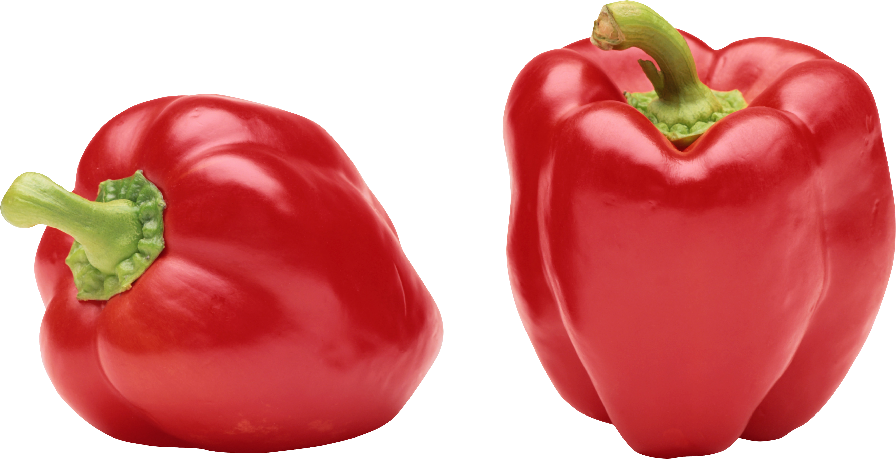

Свёкла обыкнове́нная — однолетнее, двулетнее или многолетнее
травянистое растение; вид рода Свёкла семейства Амарантовые. Культивируется на больших площадях повсеместно.
В юго-западных областях России, в Белоруссии и на Украине растение называют бура́к, или буря́к
Картошка - вид многолетних клубненосных травянистых растений из рода Паслён (Solanum) семейства Паслёновые
(Solanaceae). Клубни картофеля являются важным пищевым продуктом.
Плоды ядовиты в связи с содержанием в них соланина.
Томат - однолетнее или многолетнее травянистое растение, вид рода Паслён (Solanum) семейства Паслёновые (Solanaceae).
Возделывается как овощная культура;выращивается ради съедобных плодов — сочных многогнёздных ягод.
Огуре́ц обыкнове́нный — однолетнее травянистое растение, вид рода Огурец семейства Тыквенные, овощная культура.
Капуста - двулетнее растение, сельскохозяйственная культура; вид рода Капуста (лат. Brassica)
семейства Капустные (Крестоцветные). Русское слово "капуста" происходит от древнекельтского "кап" - голова.
Лук — род двулетних и многолетних травянистых растений, относимых к подсемейству луковые семейства
амариллисовые порядка спаржецветные. В роду, по данным сайта The Plant List,
более 900 видов, которые естественно произрастают в северном полушарии.
Баклажа́н — вид многолетних травянистых растений рода Паслён.
Возделывается как однолетнее растение. Съедобен только плод.
В ботаническом смысле это ягода, в кулинарном смысле рассматривается как овощ.
Горо́х — род однолетних и многолетних травянистых растений семейства бобовых.
Широко используется как пищевая и кормовая культура.
Ты́ква — род травянистых растений семейства Тыквенные.
Под словом «тыква» в России обычно понимаются виды Тыква обыкновенная и
Тыква гигантская, широко распространённые и культивируемые как пищевое и кормовое растение.

Болгарский перец - это плод растений группы сортов Grossum вида Capsicum annuum.
Сорта растения дают плоды разного цвета, включая красный, желтый, оранжевый, зеленый, белый и фиолетовый.
Болгарский перец иногда объединяют с менее острыми разновидностями перца как «сладкий перец».
Морковь посевная — двулетнее растение, овощная культура, подвид вида морковь дикая.
Обычно в быту под словом «морковь» подразумевается широко распространенный корнеплод
именно этого растения, который обычно относят к овощам.
Кабачок — кустовая разновидность тыквы обыкновенной с продолговатыми плодами, без плетей.
Плоды могут быть зелёного, жёлтого, чёрного или белого цвета. Мякоть нежная и быстроваркая.
Чесно́к — многолетнее травянистое растение; вид рода Лук семейства Амариллисовые подсемейства Луковые,
ранее помещался в самостоятельное ныне упразднённое семейство Луковые.